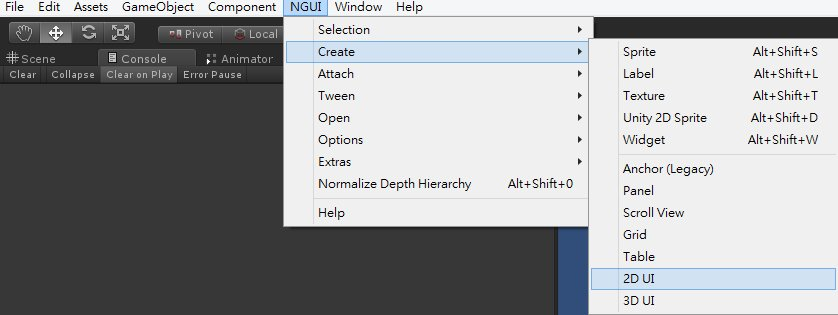
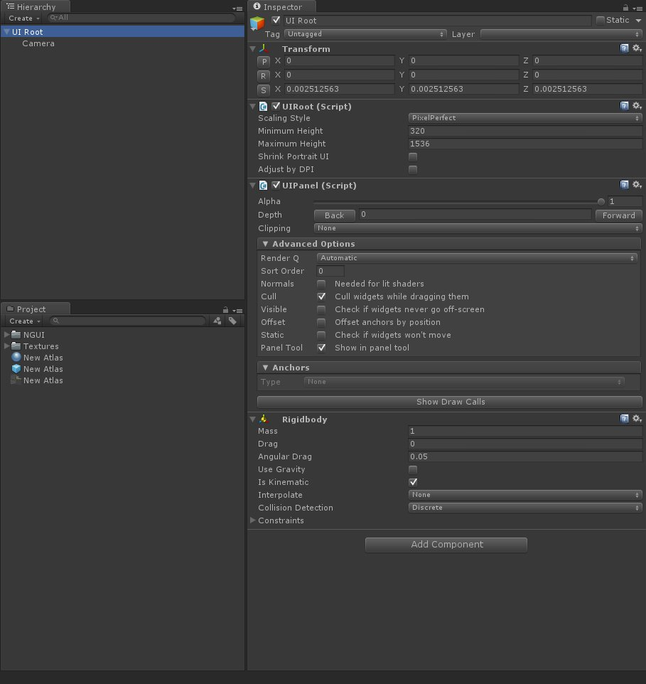
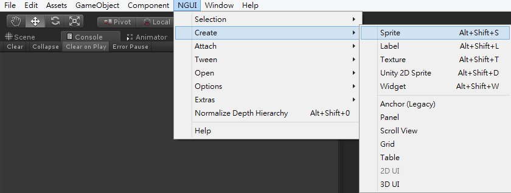
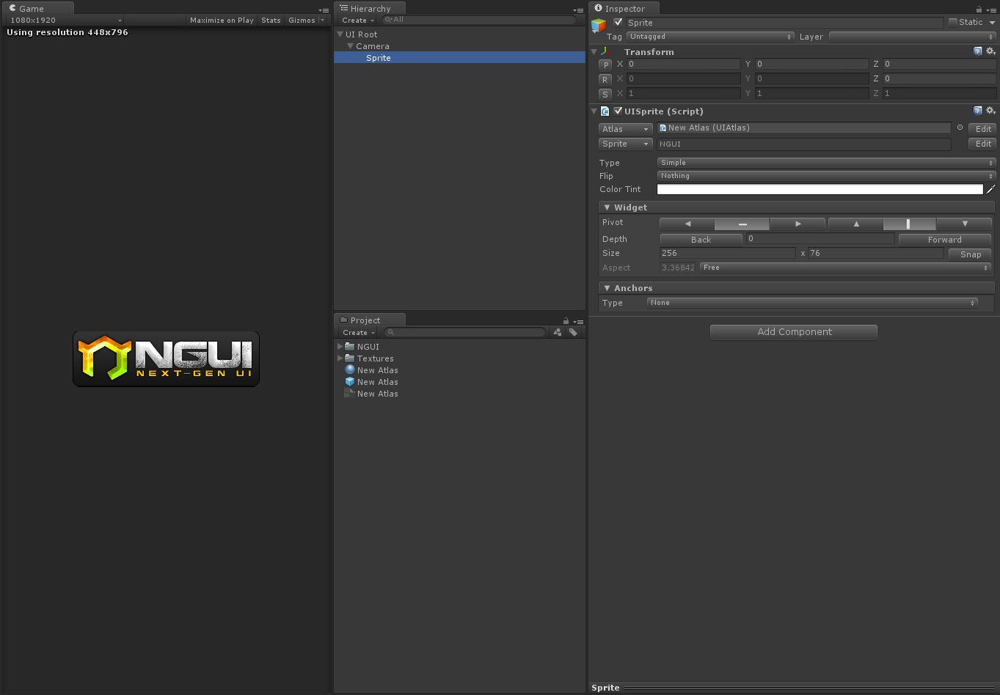
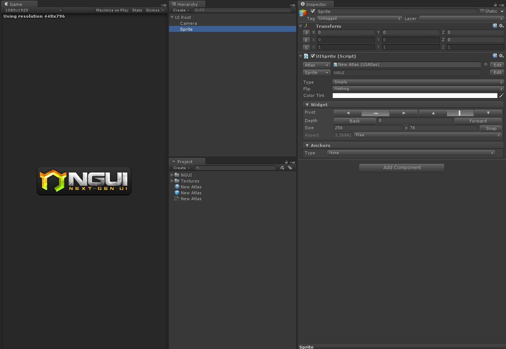
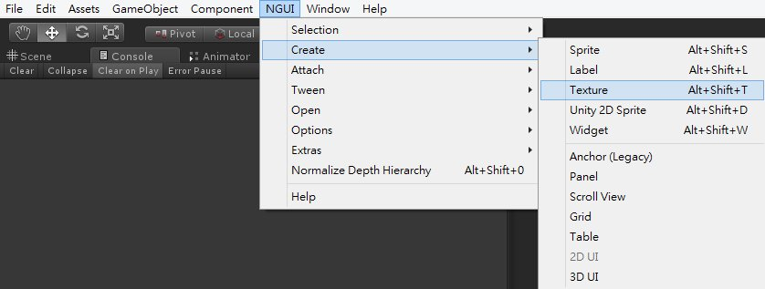
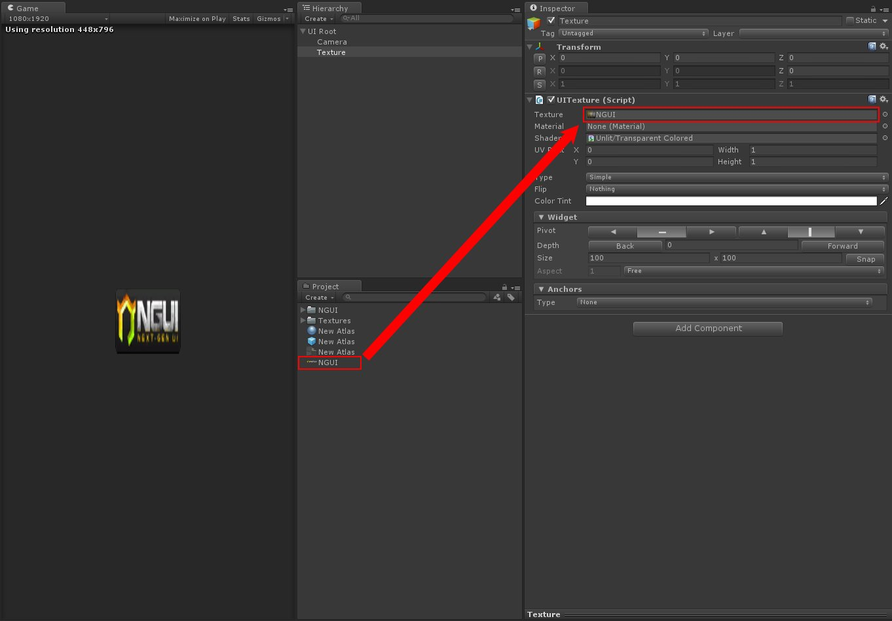
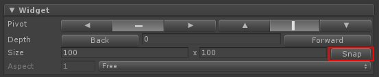

前面的章節完成了圖集的解說
接下來就來實際動手
在場景中建立第一張圖片
建立NGUI面板
首先先建立一個新場景
建立後將場景中存在的 Main Camera 物件移除
點選 NGUI → Create → 2D UI

場景中將會生成出一個 UI Root 物件
這個 UI Root 可以說是 NGUI 最根本和最重要的腳本
所有由 NGUI 所產生的 UI 物件都必須建立在 UI Root 之下

建立第一張圖片
NGUI 中圖片的建立方法有兩種
UI Sprite 及 UI Texture
UI Sprite：提取圖集中的圖片
UI Texture：可以直接選取想要顯示的單張圖片
建立 UI Sprite
點選 NGUI → Create → Sprite


圖中的 Sprite 建立在 Camera 之下
是因為在 Create 前先選擇了 Camera 物件
若沒預先選擇 Camera 物件
則會建立在 UI Root 之下

建立 UI Texture
點選 NGUI → Create → Texture

將想要顯示的圖片拖拉至 UITexture 腳本中的 Texture 屬性即可顯示圖片

若在建立 UI Sprite 或是 UI Texture 產生出圖片失真的情況
可以點選 UI Sprite 或是 UI Texture 中的 Snap 按鈕
